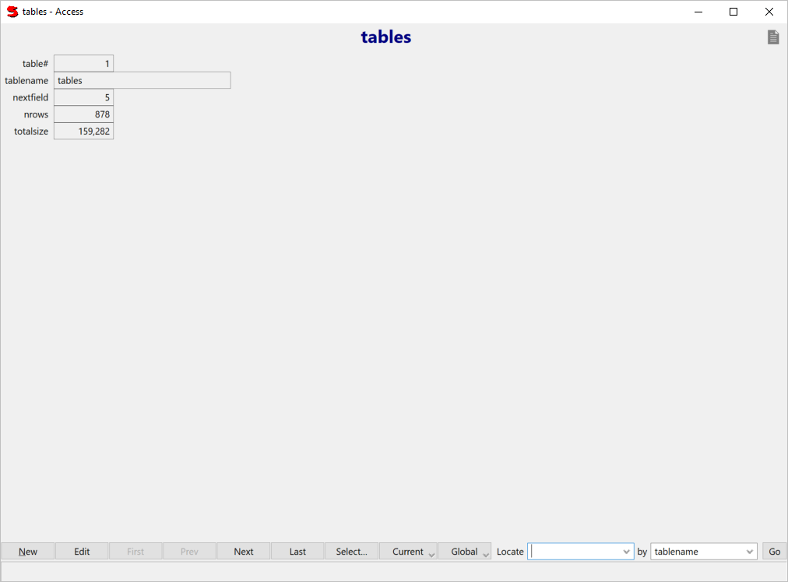

View or edit a table or query a record at a time.

| New | Create a new record. (not valid for read-only queries) |
| Edit | Edit the record. |
| First | Display the first record. |
| Prev | Display the previous record. |
| Next | Display the next record. |
| Last | Display the last record. |
| Select | Select which records to view. |
| Current | These options apply to the current record. Save This is optional, records are saved automatically when you leave them. Inspect only available if Suneido.User is 'default' Go To QueryView only available if Suneido.User is 'default' Restore to the last saved version (undo changes) Delete |
| Global | These options apply to all the currently selected records. Reporter Summarize e.g. count, total Cross Table report summarizing the records Export records to a text file |
| Locate | Enter a key value to go to. |
| by | Choose one of the key indexes to locate by. |
| Go | Go to the record selected by Locate. You can also just hit enter from the Locate field. |
See also: AccessControl